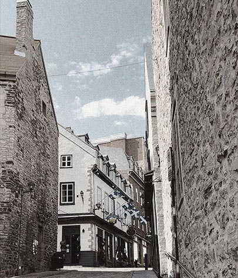

Chasse aux épigraphe
La chasse est composée de 12 épigraphes qui ont été sélectionnées pour leur intérêt historique ou anecdotique.
- Pigez l’une des 64 combinaisons possibles.
- Parcourez les fiches de la Galerie de personnages pour retracer chaque indice. S'agit-il du personnage, de l'objet ou du lieu?
- Complétez la chasse et participez au concours.

Tableau du jeu de chasse aux épigraphes
indices trouvés 0 sur 3

Personnage
--placeholder--
--placeholder--

Objet
--placeholder--
--placeholder--

Lieu
--placeholder--
--placeholder--